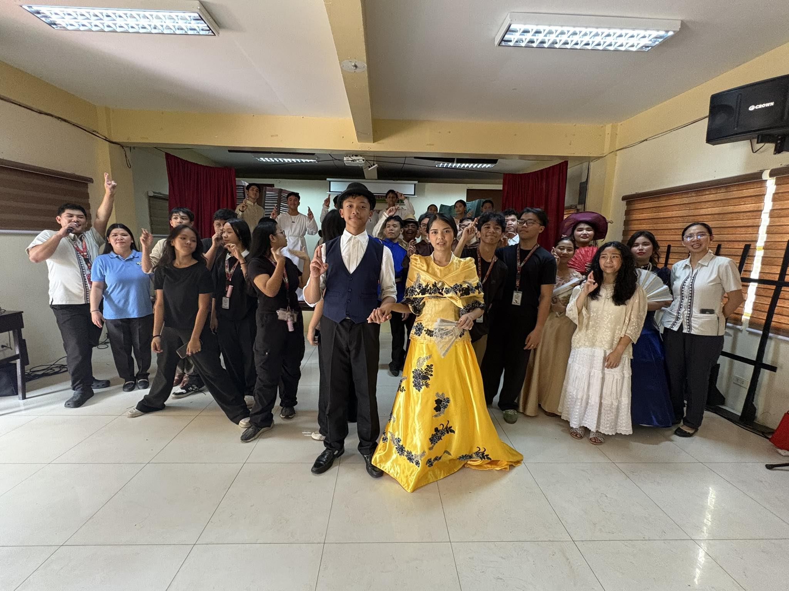
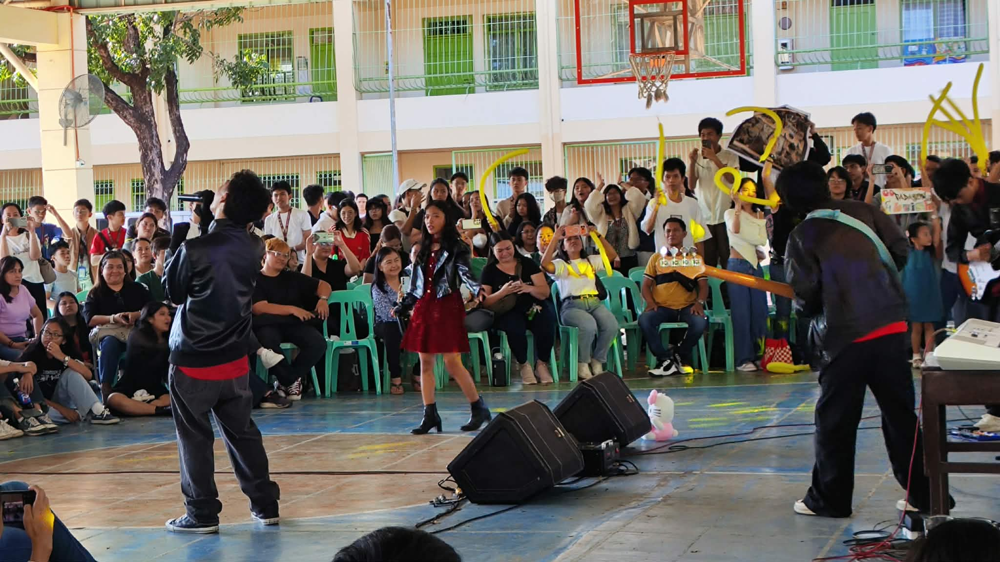
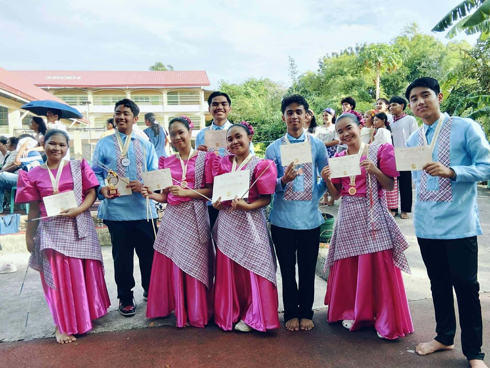

Reflection:In grades 7 and 8, my batch did not get to do any sort of play for stuff like Ibong Adarna and Florante at Laura. Grade 9 is my first time my batch got to do a play, so I learned a lot about plays and cues and the importance of even a background character. It was an experience that I don't think I can ever have again and it is really a time where I learned so much about not only the story of Noli Me Tangere, but also all the effort that goes into my role and every other role in the play.

Reflection:
I have seen the sweat and tears of the many bands that have played, and I must say that I am impressed. I have learned from them that expressing skills that you're spent time to hone and build are so worth it because showing that off makes you feel alive.

Reflection:
I did not attend the folk dance, but I did see their practice. I can look up to them for their showcase of hardwork and GRACE-fulness (heh heh funny pun). They also show respect and can acknowledge whenever they made a mistake, which is crucial in sports to improve.